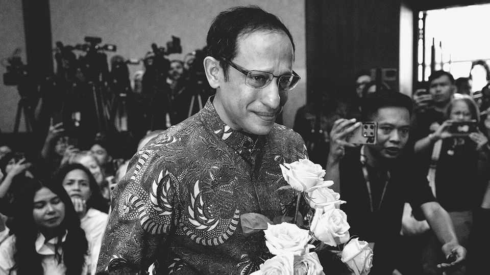

Indonesia gives its best-known entrepreneur a decade in jail
The technology giant he built is being yanked around by the state
July 2nd 2026

When Nadiem Makarim joined Indonesia’s government in 2019 as minister for education and culture, the then 35-year-founder of Gojek, a ride-hailing app and Indonesia’s first unicorn, promised to move fast and break things. It has not ended well. On June 30th an Indonesian court sentenced Mr Nadiem to ten years in prison on corruption charges (he had pleaded not guilty). He must also pay 810bn rupiah ($45m) in restitution, or face more five years. Speaking outside the courtroom, Mr Nadiem said he did not have the sum, “and [the judges] know it”.
In government, Mr Nadiem—a graduate of Harvard University and ex-McKinsey consultant—led a pandemic-era push to digitise schools, focusing on poor, rural areas, to improve patchy textbook distribution. For this the education ministry bought some 3trn rupiah of Chromebooks, cheap laptops using Google software.
It would prove to be his downfall. Prosecutors accused him of a quid pro quo with the search giant. Influenced by Google’s investments in Gojek, the court found that Mr Nadiem pushed his ministry to buy Chromebooks at inflated prices, resulting in 2.1trn rupiah in state losses, nearly half of which prosecutors accused him of siphoning off. The fact that the laptops need steady internet connections, a rarity in rural Indonesia, showed Mr Nadiem’s ulterior motives, they argued. He tried to make “Google the sole controller of the education ecosystem in Indonesia,” prosecutors said. (Google denies any such scheme.)
The prosecutors’ case seems riddled with holes. The estimated 2.1trn rupiah loss was not calculated using the market price of Chromebooks. Instead, it relies on a dubious calculation that assumes suppliers marked up prices by 15%, based on a survey of private distributors. The slapdash prosecution reflects the range of enemies Mr Nadiem made overseeing education, a corrupt sector. Known for a hard-charging management style, Mr Nadiem now admits he paid too little attention to his political standing while in office.
The shoddy trial will contribute to a deteriorating business environment in Indonesia. In an interview with The Economist during the trial, Mr Nadiem warned of a chilling effect for Indonesian entrepreneurs. The verdict comes as regulatory uncertainty is rising. Consider Gojek. Renamed GoTo after a 2021 merger with Tokopedia, an e-commerce site, the company is now subject to erratic policies. For instance, a plan to cap ride-hailing commissions at 8% (down from 20%) took effect on July 1st, just two months after its surprise announcement. But whether the new rules on two-wheelers apply to four-wheeled rides as well is still unclear. Once positioned as a rare national tech champion, GoTo’s stock now languishes at Indonesia’s legal stock-price floor of 50 rupiah. Soon, its founder will languish in jail. ■
To track the trends shaping commerce, industry and technology, sign up to “The Bottom Line”, our weekly subscriber-only newsletter on global business.